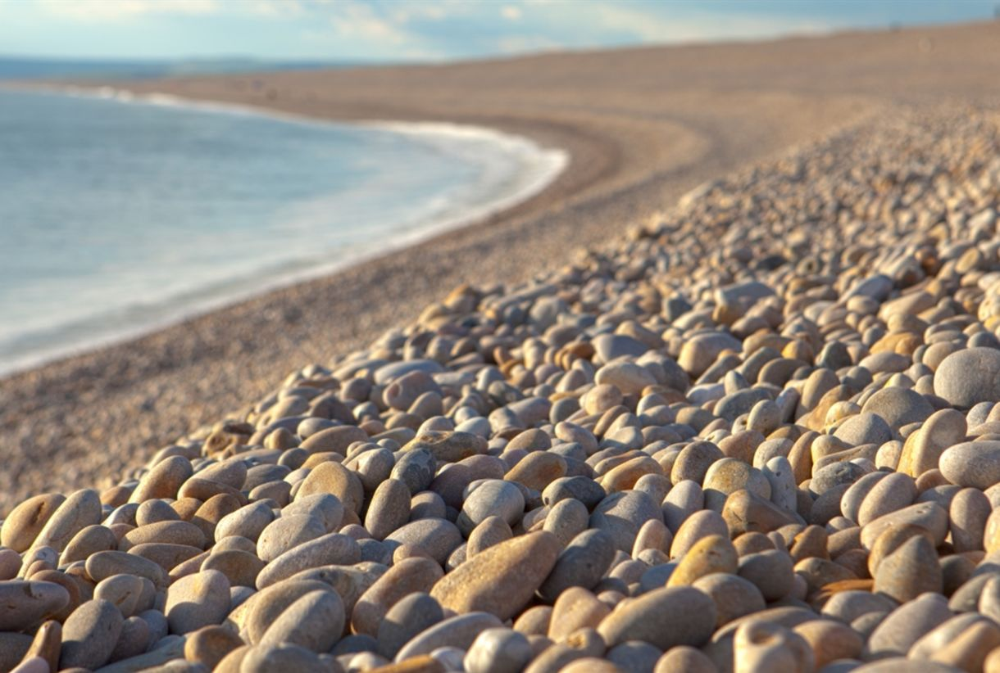
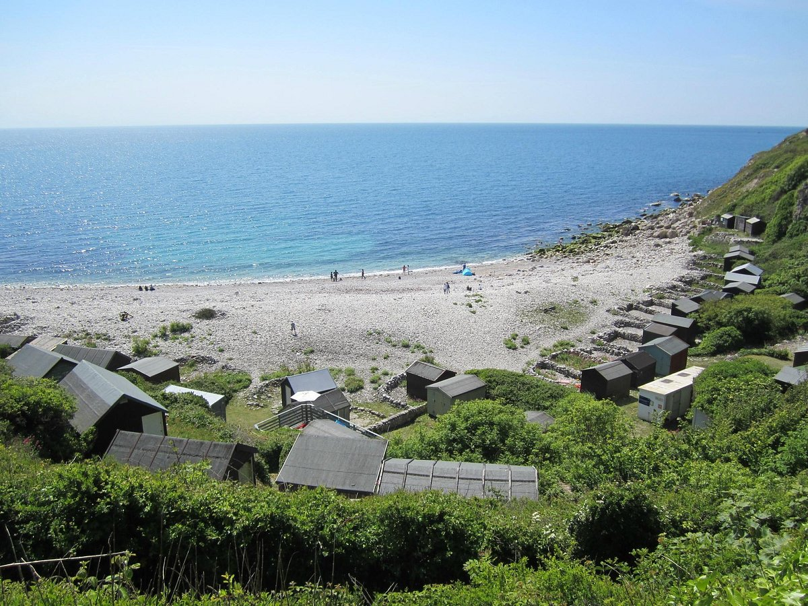
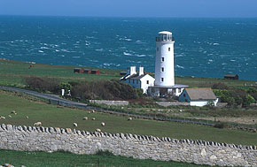
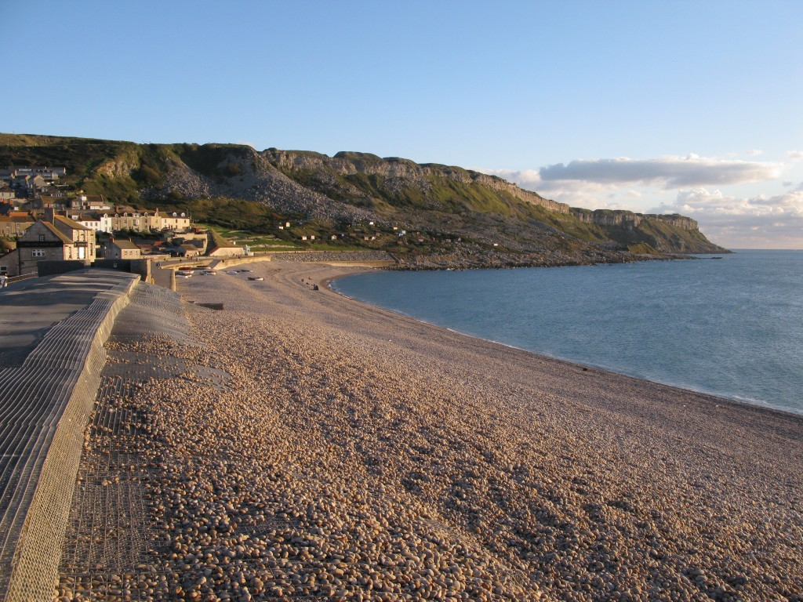
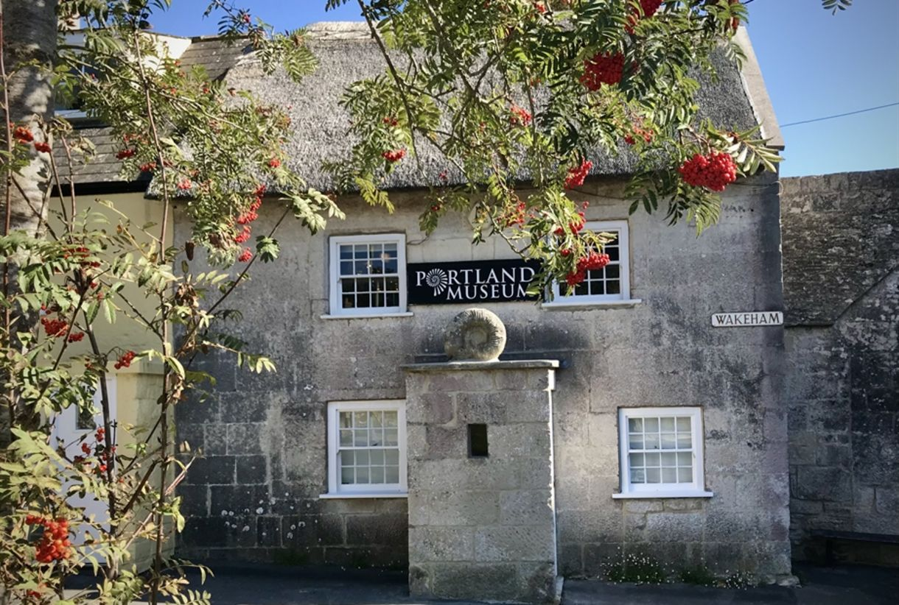

Countries you can teach in
Portland has something to offer everybody. Whether Young or Old, a Family or solo traveller - you will find something interesting about this place!
Here is a selection of some great places to visit on the Island.
China
Lots of opportunities for all levels of experience. Work in Training Centres, Kindergarden, Primary, Middle and High School. Reasonably paid: Salaries vary from 15000RMB to 30000RMB. Downsides are the Great Firewall (of China); aka No Facebook(without a VPN), plus the locals don't speak English very often. There's all sorts of weather depending on the location!

Vietnam
Vietnam has plenty of opportunties in Hanoi and HCM City. Salaries are fair. They range from $1300 - $1800 normally. There is work in both language centres and schools. Although it is easier to find work in Language centres. The cost of living is very cheap, and the weather is hot. However, the job market can be unstable compared to neighbouring countries so savings are required for security.
Japan
Japan has an established TEFL market. A large portion of those are in Private language centres (Eikaiwa). There is also work in Public/private schools, as well as Universities. However it has a high cost of living. The salary ranges from 180,000 Yen - 350,000 Yen so it not as well paid as other destinations but certainly livable if housing is provided or you can live on a budget. Colder weather of course!.
South Korea
Often said to be the top pick for most first time TEFL teachers. Salary starts from 2 million won ($1600) to 3 million won ($2250) , plus vast benefits. Mainly for children in public and private elementary and high schools, and English language academies ‘Hogwans’. If you work for private schools/centres then you will usually earn more . Saving money is possible here, due to the free accomodation as standard. If you like snow, this is for you!

Thailand
Church Ope Cove is a secluded pebble beach on Dorset's Jurassic Coast, offering a glimpse of history with the ruins of St Andrew's Church, once Portland's first parish church. Interestingly, the cove was also believed to be the landing site of Britain's very first Viking raid.

UAE
A picturesque harbour town on Portland, offers a glimpse into the past with its charming harbor and the ruins of a 16th-century chapel, hinting at the area's rich maritime history.It also has some great pubs, cafe's and restaurants to explore along with some steep hills to climb!

Cambodia
Birdwatchers will delight in this coverted old lighthouse, now a research station dedicated to the study of bird migration.

Taiwan
Chesil Cove, the curved end of the famous 18-mile Chesil Beach, offers not only stunning scenery but also a haven for marine life, making it a popular spot for scuba diving. Interestingly, despite numerous shipwrecks in the area, strong waves have prevented significant remains from accumulating near the beach, leaving divers to explore the rich underwater ecosystem.

Mexico
Delve into the fascinating history and culture of Portland at the Portland Museum. The museum houses a collection of artifacts, exhibits, and displays that showcase the island's geology, maritime heritage, and local way of life.